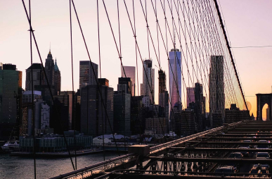
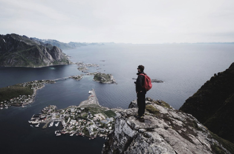
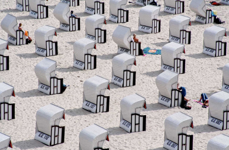
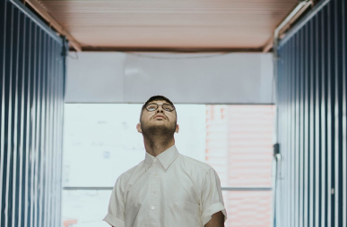

Illustration
Japan House opens in mountainside to foster peak creativity.
Enim omittam qui id, ex quo atqui dictas complectitur. Nec ad timeam accusata, hinc justo falli id eum, ferri novum molestie eos cu.
by Reta Torphy

Photography
Helmut Lang celebrates taxi drivers worldwide in latest campaign
by Alessandra Ortiz
Photography
Bowlcut launch a new summer collection that pays homage to “UK legends”
by Rosanna Ondricka

Photography
Thousands of previously unseen photographs by Andy Warhol will be made public this Autumn
by Annie Lueilwitz

Interactive Design
London-based Yinka Ilori’s storytelling furniture
by Annie Lueilwitz

Graphic Design
Anonymous Israeli art collective Broken Fingaz direct music video for U2 and Beck
by Simeon Brekke
Architecture